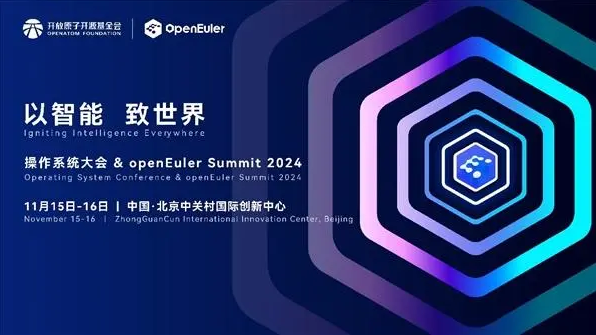
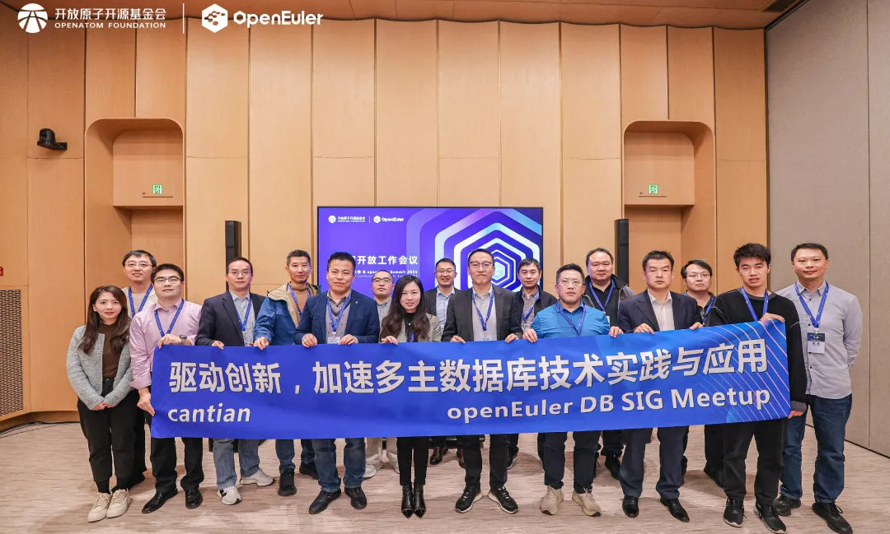
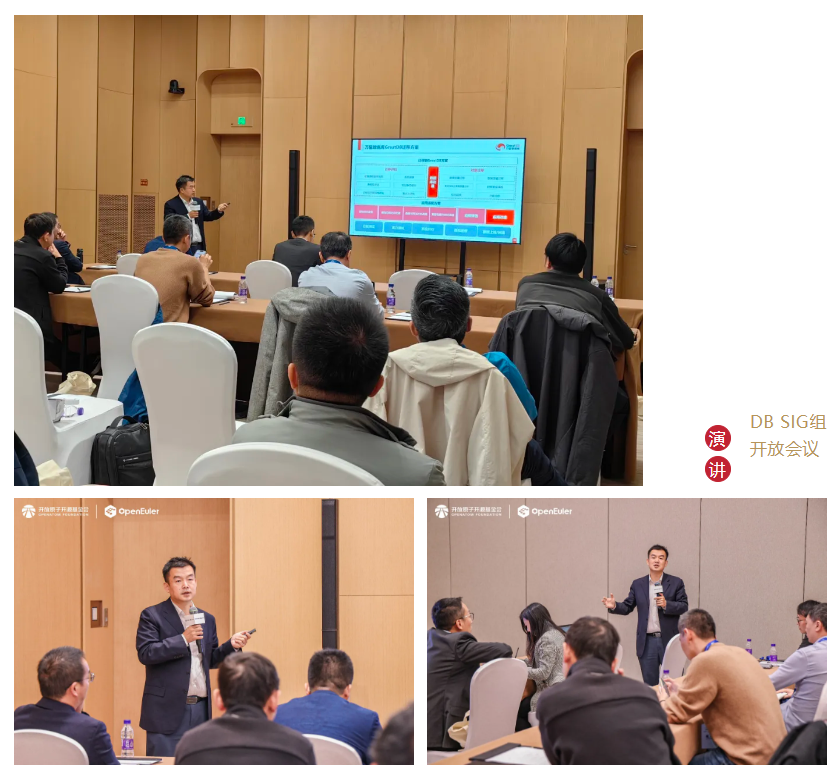
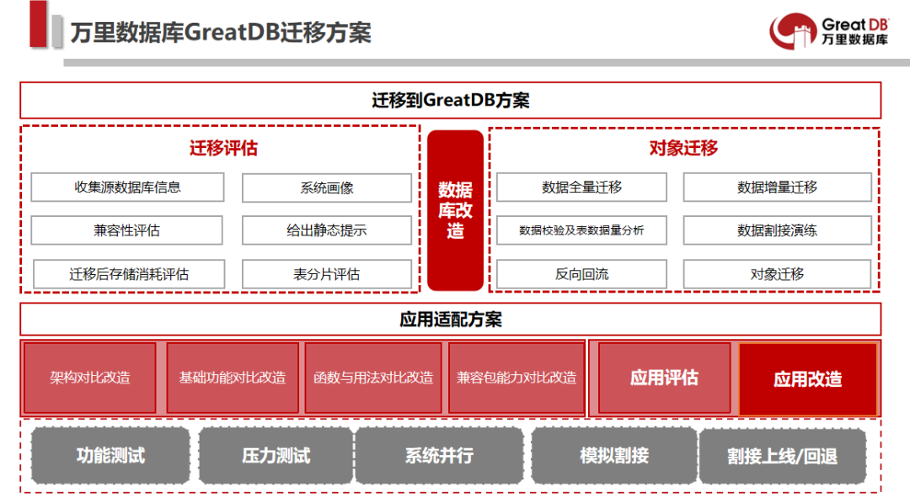
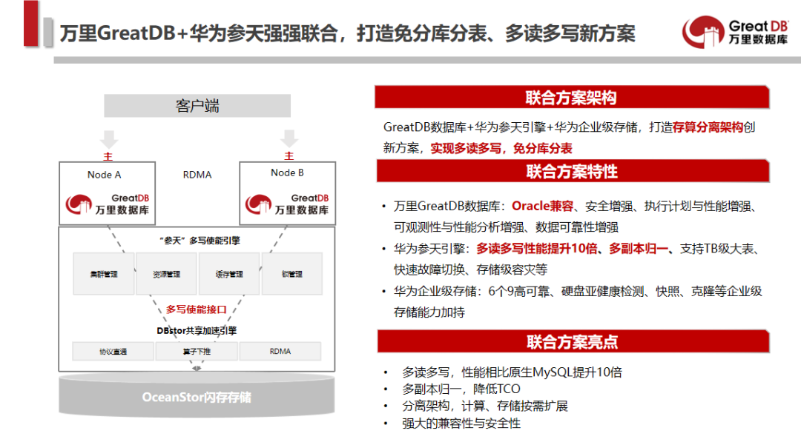

展会 | 聚焦数智未来 万里数据库受邀操作系统大会 & openEuler Summit 2024
近日，操作系统大会 & openEuler Summit 2024在北京中关村国际创新中心圆满落幕，聚焦智能推动全球开源新生态。本次大会由开放原子开源基金会孵化及运营的 openEuler社区协同产业伙伴共同主办，以“以智能，致世界”为主题，旨在汇聚全球产业界力量，推动基础软件根技术持续创新，共建全球开源新生态。

作为国内领先的基础软件供应商，万里数据库受邀亮相大会DB SIG组开放工作会议，与华为存储闪存存储、开源业务、开放原子开源基金会、 Cantian引擎规划师及架构师等嘉宾共同围绕联合创新解决方案、Cantian引擎规划、Cantian引擎社区发行版等议题进行了分享，并展开了热烈的互动讨论，共同探讨如何进一步优化Cantian引擎。

万里数据库高级咨询顾问张卓以《万里数据库X华为参天 存算分离联合方案赋能金融转型提质》为主题进行了内容分享。
张卓指出，万里数据库作为首批通过安可测评的专业数据库厂商，拥有一站式数据库产品与解决方案，产品具备高性能、强兼容、高可靠等优势，不仅高度兼容Oracle，而且对MySQL能实现100%兼容，是平替MySQL的最优国产数据库选择。此外，万里数据库打造了Oracle、MySQL等主流数据库迁移到GreatDB的迁移解决方案，可帮助客户高效、便捷完成数据库迁移替换。


▲GreatDB迁移解决方案
提及数据库存储架构，业界专家指出，新生态数据库存在两种部署模式。在初期，这些数据库通常采用服务器本地盘存储，然而对于金融行业而言，存算分离+专业共享的存储架构模式，才是分布式数据库的最优选择。
在此背景下，万里安全数据库GreatDB与Cantian引擎强强联合，打造联合创新解决方案，通过存算分离架构实现多读多写和免分库分表，性能相比原生MySQL提升10倍，并实现了多副本归一和计算存储按需扩展，具备强大的兼容性与安全性。
该联合方案被应用于光大银行岐山工程——新一代数据库技术平台建设项目中，斩获中国人民银行“金融科技发展奖”，是联合解决方案赋能金融转型提质的重要实践。

▲万里GreatDB与华为参天联合解决方案图
未来，万里数据库将继续秉承开放、共享、共赢的理念，积极参与操作系统、存储引擎等软硬件生态上下游的联合创新与生态合作，致力于将产品技术与行业属性深度耦合，为金融、电信、能源、政府、交通、教育等关键领域提供稳定可靠的数据库解决方案和服务，推动全栈国产化技术创新和应用，为构建安全、稳定的关键基础设施底座贡献积极力量。